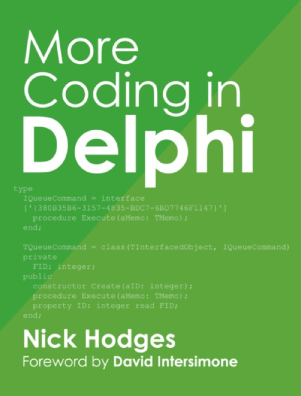

More Coding in Delphi
Published by : Leanpub
Writed by : Nick Hodges
Published date : 17/08/2015
ISBN-10 : 194126610X
ISBN-13 : 9781941266106
Language :  English
English
Web site : https://www.morecodingindelphi.com
About More Coding in Delphi
This is a book all about writing Delphi code. Sure, there's a bit about component writing, too, but the main focus is on code. It's all about how to use the language in the most effective way to write clean, testable, maintainable Delphi code. It covers a variety of powerful Delphi programming features and techniques including Patterns, Threading, Parallel Programming, Aspect Oriented Programming, writing SOLID code and more.
All that, and a foreword by the great David Intersimone!
Where to buy ?
This book has the ISBN13 "9781941266106".
If it is still available for sale, you can order it in your favorite bookstore, by its publisher or online at
Amazon CA,
Amazon FR,
Amazon JP,
Amazon UK or
Amazon USA depending on your country.
Table of content
Foreword
Preface
Acknowledgments
Frameworks Used in this Book
Spring for Delphi Framework
DuckDuckDelphi
Six Thoughts Before We Start
Thoughts on Encapsulation
Thoughts on Coupling
Thoughts on Cohesion
Thoughts on Command Query Principle
Thoughts on Postel’s Law
Thoughts on Composition over Inheritance
Conclusion
Writing SOLID Code
Introduction
What SOLID Is
Single Responsibility Principle
Open/Closed Principle
Liskov’s Substitution Principle
Interface Segregation Principle
Dependency Inversion Principle
Conclusion
Patterns
Factory Pattern
Introduction
An Informal Look at Factories
A More Formal Look at Factories
Factory Method
Abstract Factory
Conclusion
Observer Pattern
Introduction
Baseball Data
Generic Observer with Spring4D
Conclusion
The Adapter Pattern
Introduction
A Simple Example
A More Practical Example
Conclusion
Decorator Pattern
Decorator and Interfaces
Summary
Command Pattern
Introduction
A Simple Example: An Auto Key Fob
Undoing Commands
A Simple Queue of Commands
Summary
Operator Overloading
An Example: TFraction
Assignments
Implicit vs. Explicit
Using TFraction
Conclusion
Multi-Threading and Parallelism
Introduction
About These Three Chapters
What is a Thread?
Think Differently
Why Should I Care About Multi-threaded and Parallel Programming?
Multi-threading with TThread
Introduction
Descending from TThread
Thread Termination
Handling Exceptions in Threads
TThread Class Methods
Synchronization
Abstracting the Notion of Synchronization
The Perils of Multi-threading
Conclusion
Parallel Programming
Parallel Programming Library
Parallel For Loops
Introduction
Conclusion
Aspect-Oriented Programming
Introduction
An Illustration
The Basics:
A More Useful Example
AOP in a Single Place
AOP via Attributes
Conclusion
Component Writing
Introduction
TSmiley – A Brief History
Start from Scratch
Conclusion
Appendix A: Resources
Source Control
Patterns
Appendix B: Duck Typing
Introduction
What is Going on Here?
Duck Typing with DSharp
Duck Typing with DuckDuckDelphi
Duck Typing in the VCL
Why Use Duck Typing?
Problems with Duck Typing
Conclusion
Appendix C: Stuff Nick Does When Coding
Formatting Stuff
Spacing
Coding Stuff
Conclusion
Appendix D: Sources Used in Writing This Book
Books
Web Links
Videos